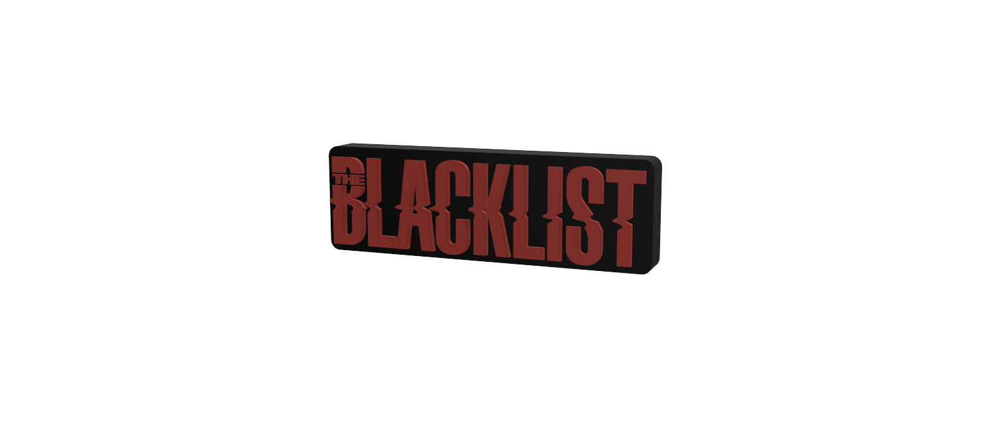

Blacklist
Definition
noun:
a list of people or things that are regarded as unacceptable or untrustworthy and should be excluded or avoided
verb:
to put on a blacklist
Origin
The origins of the terms “blacklist” and “whitelist” can be traced back to the early 17th century. These words were used in the context of labor relations in order to identify individuals who were either banned (blacklisted) from employment or granted special permission (whitelisted) to work under specific conditions.
Insiders' Blacklist
The names on this blacklist represent the teams that should only be played as a last resort, unless they are on the Hall of Shame. Hall of Shame teams are not to be played under any circumstance.
